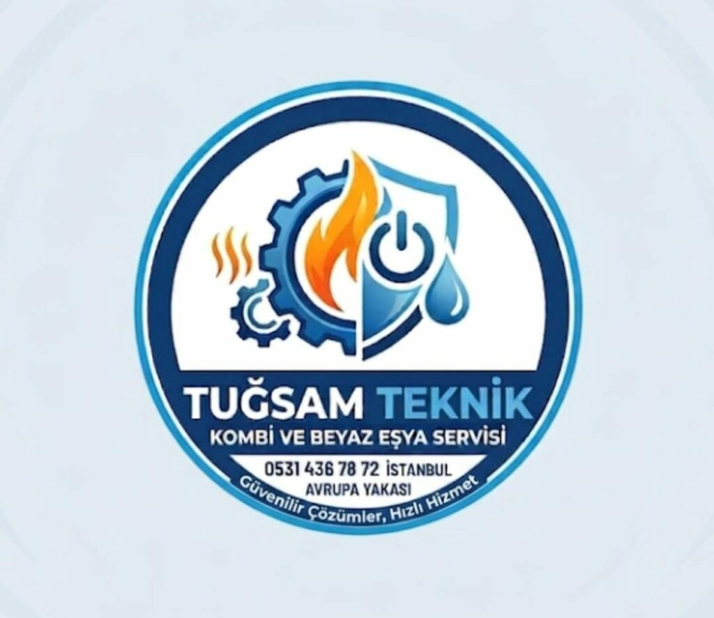
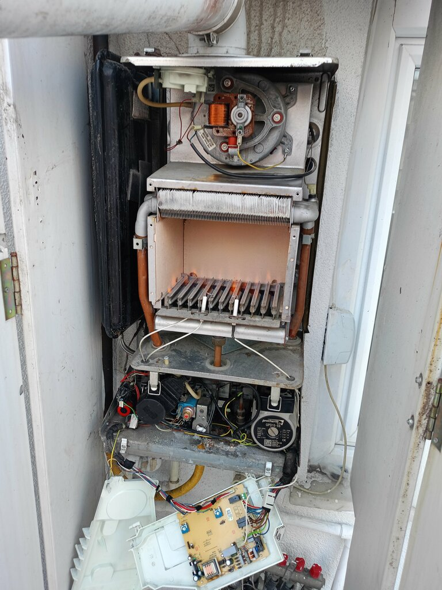
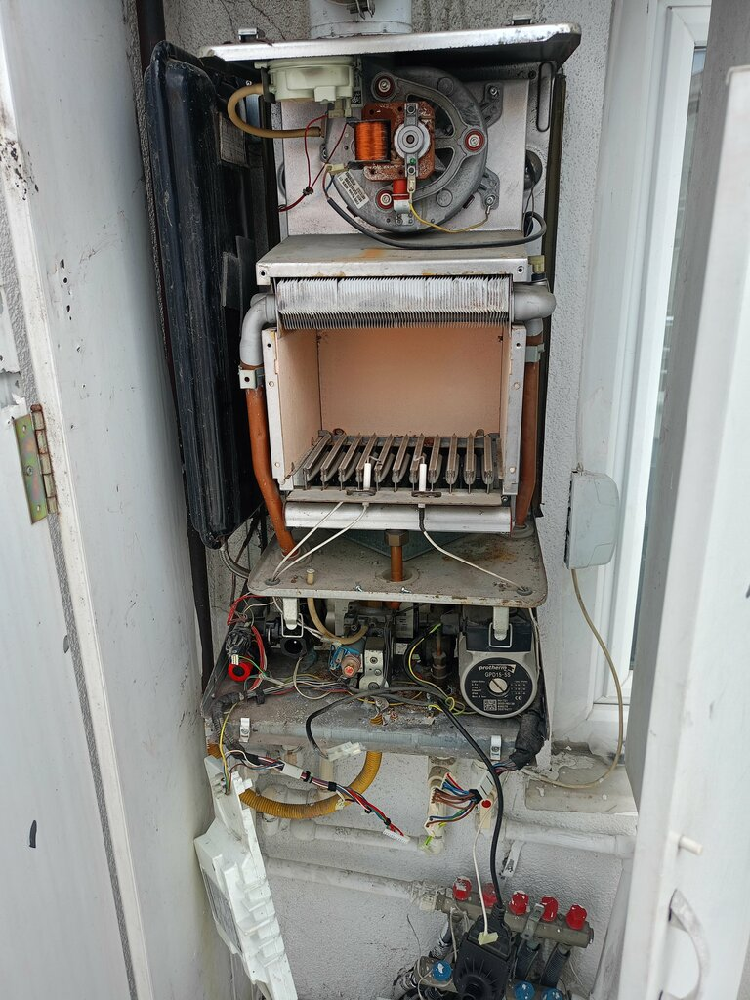
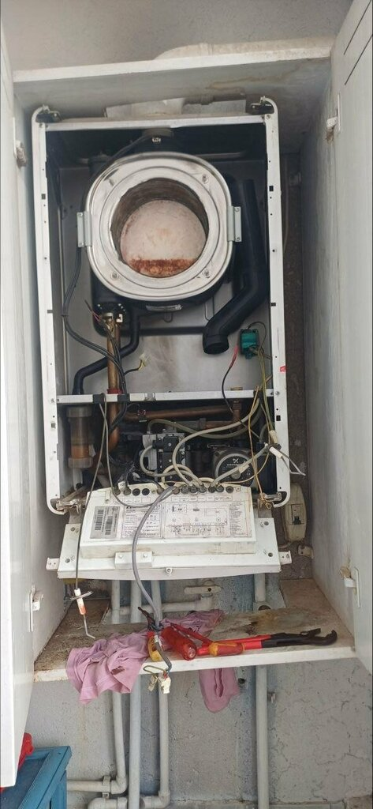
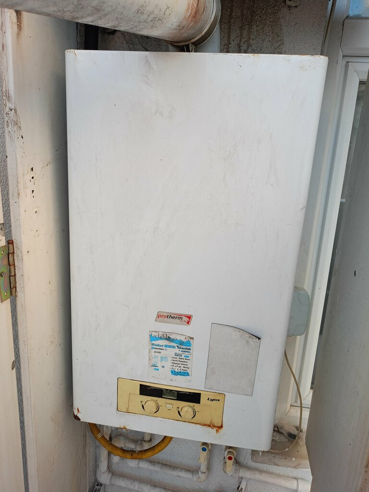

☎ 0531 436 78 72
Belirtiyi seçin. Ne olabileceğini, önce neye bakmanız gerektiğini ve ne zaman usta çağırmanız gerektiğini söyleyelim. Gerekirse bilgileriniz tek dokunuşla bize gelir.
Size en yakın belirtiyi seçin.
Kod ve marka WhatsApp'ta hazır mesaj olarak açılır. Ustamız size ne yapmanız gerektiğini yazar, gerekirse aynı gün geliriz.
Gerçek servis fotoğraflarımız.



Kombi tamiri ve bakımı, petek temizliği, su kaçağı tespiti, sıhhi tesisat, gider açma, beyaz eşya servisi.